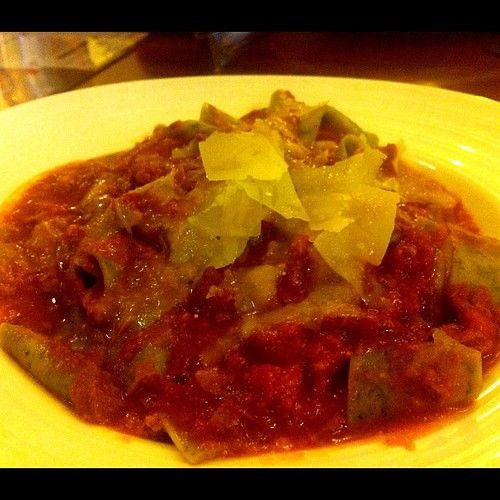

Sausage and Pepper Ragout

Photo: raramaurina (CC BY 2.0)
A stovetop pork dish of browned brown-and-serve sausages simmered with bell peppers, onion, and garlic in diced tomatoes seasoned with fresh basil.
Directions
- Cook sausage over medium heat in large skillet. Remove from pan; cut into 1-inch pieces. Set aside.
- Melt butte in same pan. Add onion, and garlic; cook until softened, 2 to 3 minutes. Add bell peppers and cook over medium-high heat, stirring often, until limp, 5 to 6 minutes.
- Add tomatoes with liquid, basil, sugar,salt and pepper; heat to a boil. Reduce heat, add sausages, and simmer until thickened, 5 minutes. Adjust seasoning ad serve hot. Can be made in advance and reheated.
- Cook the sausage over medium heat in a large skillet. Remove from the pan, cut into 1-inch pieces, and set aside.
- Melt the butter in the same pan. Add the onion and garlic and cook until softened, 2 to 3 minutes.
- Add the bell peppers and cook over medium-high heat, stirring often, until limp, 5 to 6 minutes.
- Add the tomatoes with their liquid, along with the basil, sugar, and salt and pepper; heat to a boil.
- Reduce the heat, add the sausages, and simmer until thickened, 5 minutes. Adjust the seasoning and serve hot. Can be made in advance and reheated.
https://baron-3dl.github.io/normans-kitchen/recipe/sausage-and-pepper-ragout.html